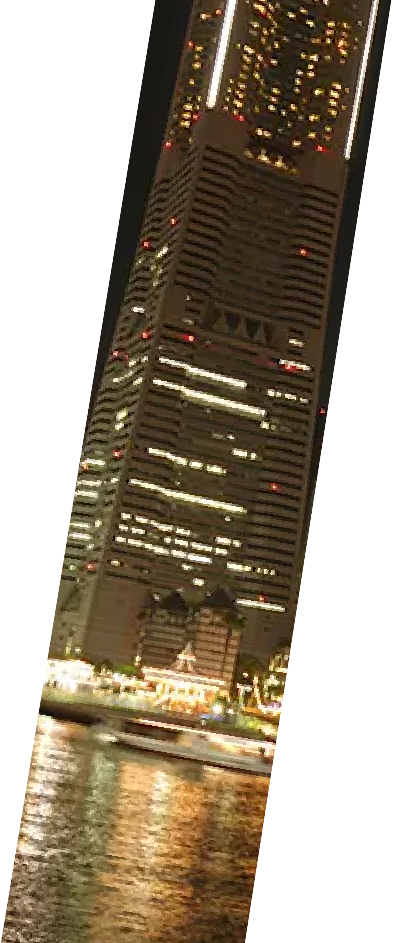
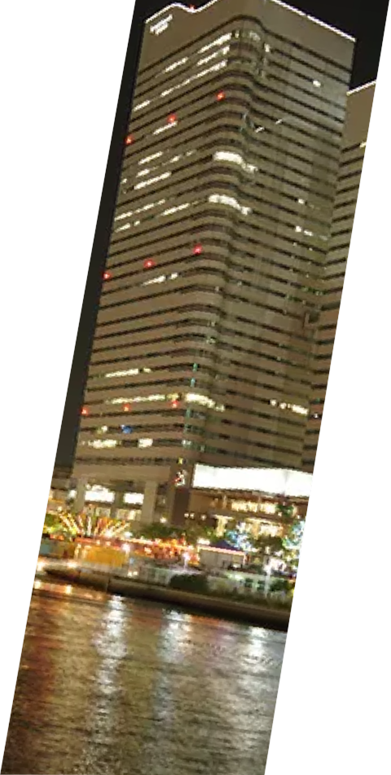
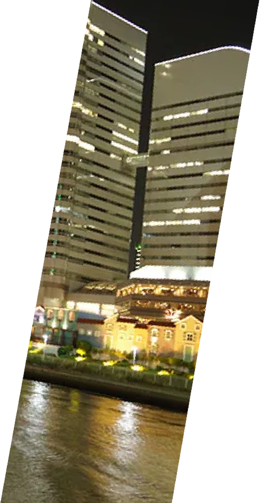

Technology Power For Future
未来に続く技術力・施工力の向上を目指します。
- 
- 
- 
未来に続く技術力・施工力の向上を目指します。
工場電気設備工事、オフィスビル電気設備工事集合住宅・店舗等の電気設備工事、
公共施設の電気設備工事や電気設備の保守点検業務と、電気の総合プランナーとして
電気設備工事に注力してまいりました。都市や地域を形成していくのにインフラ整備を
施すだけでは十分ではありません。私たち新和電工は、ただ電気設備工事を施工するのみならず、
それを利用する皆さまに安心と心を豊かにする「電気の力」と「明かり」を届けたいという想いで
仕事に取り組んでおります。
Job Description
電気は製造工場にとって商品を生み出す大切な原動力です。私たち新和電工は、自動車、食品、飲料、ハウスメーカー、 冷凍設備、塗料など多くの製造工場において、建物の新築工事はもとより、生産ラインの新設、増設、移設や改造や防災 設備・施設のインテリジェント機能を付加した高機能の電気設備に伴った電気設備工事のプランニング・御提案・施工を 行っています。
進化し続けるオフィスビルに最適な電気システムを提供すべく、私たち新和電工は、電気に関わるすべてのオフィス、 学校、ホテルなどを快適に過ごせるような機能環境にしていきます。
信頼性の高い電気設備が求められる公共施設関連工事。私たち新和電工は、東京都、区役所、市役所、公共福祉施設のほか 多数の公共施設において、受変電設備、蓄電池設備、電力監視設備、動力設備、照明設備、通信情報設備、防災設備などさま ざまな電気設備工事で高い評価を得ています。
地球環境温暖化などと時代は様変わりしています。これまでに建設された、商業ビルや工場は、建築設備、電力関連設備、 空調施設などの新規機能を付加することで新しくよみがえります。そんな工事の一端を私たち新和電工は深く関わっていきます。
店舗施設の新築やリニューアルや仮店舗などの電気設備工事、文化施設等に関わる電気設備工事を行っています。
電源設備（受変電設備保安業務、自家用発電機保守点検、非常照明用蓄電池保守点検）空調設備（空調設備の保守、修理） 防災設備（自動火災報知設備保守点検、防排煙設備保守点検、避難器具設備保守点検、消火器の保守点検）などの業務を 行っております。
地球温暖化対策の一環として、太陽光発電などの環境にやさしい再生可能エネルギーを活用した事業や、ＥＭＳ(エネルギー マネジメントシステム）を取り入れた省エネおよび負荷平準化など、エネルギーの効率的な利用に取り組んでいます。
氷川丸は、⽇本郵船が1930年に竣⼯させた⽇本の12,000ｔ級貨客船です。現在では横浜市で博物館船として公開されて おります。国の重要⽂化財にも指定されています。私たち新和電⼯は、そんな名誉ある船の電気設備メンテナンスに携わら させて頂いております。また船舶関連に関しては、東京・横浜の湾岸地区の港湾施設の電気設備の仕事を数多く行っており ます。
カンニング竹山のイチバン研究所」で当社が紹介されました。
令和5年9月2日(土)TOKYO MXで放送のバラエティ番組
「カンニング竹山のイチバン研究所」で当社が紹介されました。
【完全責任施工イチバン】を目指す当社の仕事の風景や、
共にイチバンを目指す若手社員のインタビューを地上波でお届けしました。
実際に放送された映像は、番組HPの他、当社Youtubeチャンネルでもご覧いただけます。
ビジネステレビ番組「企業魂」で当社が紹介されました。
令和元年10月4日(金) TOKYO MXで毎週金曜20:27～放送のビジネス番組「企業魂」で
当社が紹介されました。
製造工場をはじめ、多くの現場において電気設備工事のプランニング・提案・施工を
行っている当社の思いを地上波でお届けしました。
実際に放送された映像は、こちらよりご覧いただけます。

〒136-0072 東京都江東区大島1-9-8
TEL：03-5628-2111 / FAX：03-5628-2132